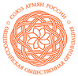
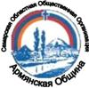
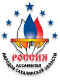

Центр предоставляет следующие виды юридических услуг:
- Оформление и направление запросов в госучреждения.
- Квалифицированная защита по гражданским и уголовным делам во всех регионах Российской Федерации и в Республике Армении.
- Оформление и подача жалоб на постановление о депортации или выдворении.
- Юридическое сопровождение организации бизнеса в РФ и РА.
- Представление Ваших интересов во всех государственных учреждениях.
- Получение выписок, справок и других документов из архивов и других организаций по доверенности, не требующее личного присутствия.
- Помощь в заполнении анкет по вопросам получения гражданства.
- Перевод и нотариальное заверение документов.
ПАСПОРТНО-ВИЗОВЫЕ УСЛУГИ
- Продление срока действия паспорта гражданина Армении в иностранных государствах («продление визы»). Ставится отметка о его действительности в зарубежных странах в виде круглой печати.
- Получение новых паспортов несовершеннолетних.
- Исправление ошибок в биометрических данных в паспорте гражданина Армении и других документах.
ПОЛУЧЕНИЕ СПРАВОК, ВЫПИСОК, ДУБЛИКАТОВ
- Справка о наличии или отсутствии гражданства РА
- Справка о наличии или отсутствии судимости
- Справка о гражданском состоянии (в архиве ЗАГСа в Армении)
- Справка о возвращении на Родину
- Справки, необходимые при оформлении пенсии в РФ
- Все необходимые документы из соответствующих госучреждений Армении и помощь в оформлении наследства
- Иные справки
УГОЛОВНЫЕ, ГРАЖДАНСКИЕ, АДМИНИСТРАТИВНЫЕ ДЕЛА
- Защита по уголовным делам
- Представление интересов по гражданским и административным делам
- Воинская обязанность
- Ведение дел по оформлению наследства
Для решения вышеуказанных задач, Вы можете обратиться в Российско-армянский центр правового содействия. Всё что вам нужно: отправить доверенность на представления ваших интересов в соответствующих учреждениях. Передача документов осуществляется по почте или через третьих лиц.
Мы готовы оказывать перечисленные услуги представителям армянской диаспоры в вашем регионе России.
- 
- 
- 